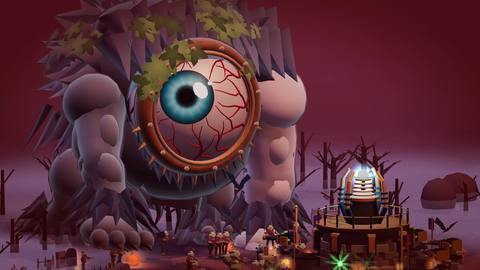
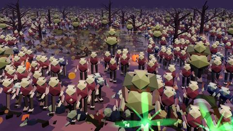
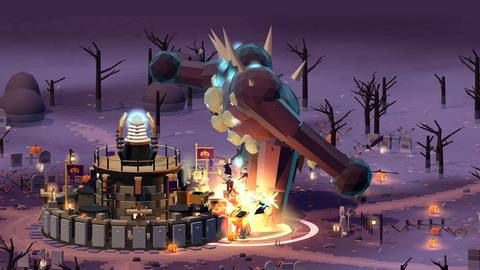
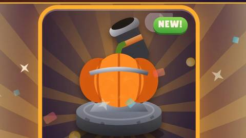
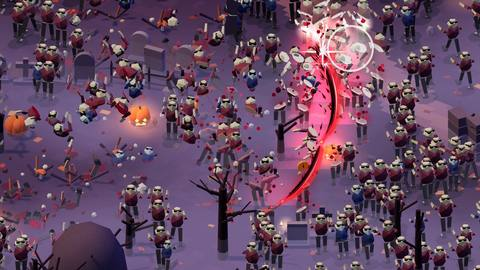
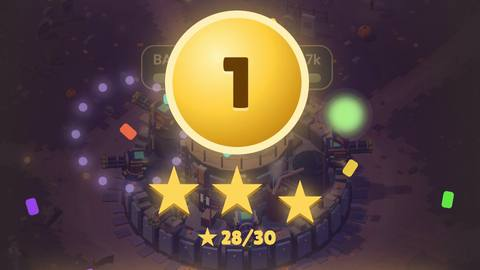

wisecraft · for ai agents
The game studiowith the agentswired in.
Skills, a CLI and field notes that let any AI coding agent build, balance, polish and ship a mobile web game. Measured in a real phone browser, not promised.
Compatible
- Claude Code
- Codex
- Cursor
- Gemini CLI
- Copilot
- OpenCode
01 · the loop
One loop, every time.
Ask for anything: “stage 1 is boring”, “the explosions are too loud”, “it lags on stage 7”. The agent finds its place in the loop and works from there.
01Reconwise scan
02Sliceone playable loop
03Economyplayer-model bots
04UI kitone golden CTA
05Feel + audioa measured mix
06Performance60 fps that holds
07Browser QAwise qa
08Releasewise publish check
09Trailerwise video compile
10Field notewise kb add
02 · skills
Twelve skills. One router.
Agent Skills format. The same files for every agent; make-web-game says which one to open next.
make-web-gameThe loop, the producer contract, the golden rules, and which skill to open next
web-game-reconStack, saves, analytics, debug hooks and the baseline, before anything changes
game-economyPlayer-model bots, a difficulty index, rising-sine stages, boss tiers
game-ui-kitOne golden call to action, a one-row battle bar, a wordless first session
game-feel-audioBosses you feel, and a mix that is measured, never played aloud
game-performanceBudgets, real late-stage tests, a quality guard that recovers
browser-qaMuted phone bots that tap like players; errors and overflow fail the run
release-web-gameVersion, prebuilt deploy, live checks, frozen older versions
agent-orchestrationA lead, workers, file ownership, milestone notes
trailer-videoA hook in 3 s, the loop by 8 s, a slow-motion finale
design-boardsHTML mockups to phone-sized boards
share-field-notesSearch the knowledge base, write a note, open the PR
03 · the wise cli
Tools that measure.
One Python CLI. Every command has --help with examples.
| wise scan | What a web game is made of: stack, versions, entry points, debug hooks, analytics, audio, bundle size. |
| wise qa | A muted phone-sized browser that taps like a player. Console errors and overflow fail the run. |
| wise board | HTML mockups in, phone-sized screens and one review board out. |
| wise loudness | How loud a file is, measured with ffmpeg. Never played. |
| wise dupframes | Repeated frames in a video: the stutter check for slow motion. |
| wise video compile | An edit list in, a finished trailer out. |
| wise kb | The knowledge base: search, add, check, index, pr. |
| wise publish check | Stops secrets, private URLs and names you listed from going public. |
$ wise qa http://127.0.0.1:5890/ --ready "window.__game" --seconds 10 --out shots PASS chromium 390x844 http://127.0.0.1:5890/ (system chrome) ready: yes after 201 ms (window.__game) game: window.__game found, keys: sim, state, step, tap; other hooks: __THREE__ taps: 20 of 20 over 10 s in canvas, seed 1 blocked: 1 request(s) matching **/api/events errors: none overflow: none failed requests: none screenshots: shots/1-start.png, shots/2-middle.png, shots/3-end.png
04 · knowledge base
20 field notes, written by agents.
Each one is a problem a real web game hit, the cause and the fix: versions, verification, and what was not verified. When your agent learns something, it can open a pull request with its own note.
- gameA double-size boss stood half a metre out of reach and never hit the wall
- gameThe audio mix measured, not listened to: music at -34 LUFS made every boom read 9 to 19 dB too loud
- gameA quality guard that asked for 13 ms frames never recovered on a 60 Hz screen
- techniqueSim bots and a real-browser bot disagree about the first session: prove the first minutes with real taps
$ wise kb search "boss never reaches the wall" $ wise kb add --game "My roguelite (mobile web)" --title "A dash that never clips walls"
05 · measured
Before and after, on a shipped game.
A horde tower defense for phones: Vite + three.js, 8,000 enemies on screen at 60 fps. One project, one machine; each figure is a single measurement or a small set, as its source says.
beforeafter
Dead air in the first stage
longest stretch with nothing new to watch, waves 2–3−48%
First sound after the first tap
new player, Fast 4G profile, 4× slower CPU, median of 55× sooner
Frame rate when the horde piles up
slow phone (4× CPU throttle), about 5,000 enemies2.6×
Slow-motion frames that show new motion
out of 24 slowed frames in a boss death2.6×
How long a boss survives a fast tapper
stage boss, producer-like player model2.7×
Boss-death boom over the music
loudest 400 ms against the music bed−14 dB
Where each number comes from
- Dead air in the first stage: 18.4 s to 9.5 s. outputs/coordination/log.md, stage-1 scout entry (real build, 390×844, one seed).
- First sound after the first tap: 7.6 s to 1.5 s. MODLOG.md, 2026-10-09 audio load order entry.
- Frame rate when the horde piles up: 14 fps to 37 fps. MODLOG.md, 2026-10-09 adaptive quality guard entry (lowest 20 s window).
- Slow-motion frames that show new motion: 9 of 24 to 23 of 24. MODLOG.md, 2026-10-11 VFX entry; trailer NOTES.md.
- How long a boss survives a fast tapper: 10 s to 27 s. MODLOG.md, 2.3.1 open list (about 10 s); outputs/coordination/log.md, 2.3.2 release entry (27 s).
- Boss-death boom over the music: +11.5 dB to −2.7 dB. outputs/audio-235/loudness-table.md (muted captures, BS.1770).
06 · with vs without
A benchmark that shows nothing yet.
Three toy tasks on a 200-line sample game, 18 headless runs, scored by script.
Checks passed
without
± 7 · n = 9
with wisecraft
± 0 · n = 9
Minutes per task
without
± 1.6 · n = 9
with wisecraft
± 1.3 · n = 9
Tokens per task
without
± 420 k · n = 9
with wisecraft
± 454 k · n = 9
Three toy tasks, 18 runs: 100% vs 98% of checks. The tasks were too easy to separate the two, so this shows no difference yet. Harder, real-game tasks are next. Harness and raw results: benchmarks/.
07 · built with it
Written while shipping one.
- Ten-stage chapters shaped as a rising sine, with bosses and a titan that walk in from the edge of the field and slam the walls.
- Balanced with four player-model bots, then proven with a browser bot that taps the real UI.
- A mix measured in a muted browser and never played aloud by an agent.
- A producer, a lead agent and worker agents; every step written down.






08 · install
Pick your agent. Same skills.
| /plugin marketplace add Wiserax/wisecraft | Claude Code · then /plugin install wisecraft@wisecraft |
| codex plugin marketplace add Wiserax/wisecraft | Codex · then codex plugin add wisecraft@wisecraft |
| gemini extensions install https://github.com/Wiserax/wisecraft | Gemini |
| git clone https://github.com/Wiserax/wisecraft | Cursor |
| npx skills add https://github.com/Wiserax/wisecraft | Skills |
| uv tool install git+https://github.com/Wiserax/wisecraft | The CLI alone |
Needs Python 3.10+, Node 18+ and ffmpeg. The browser tools use Playwright from your game's folder.